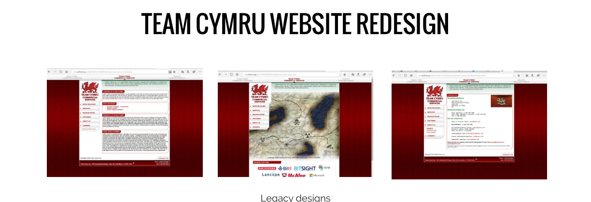
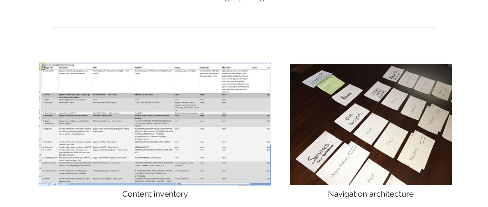
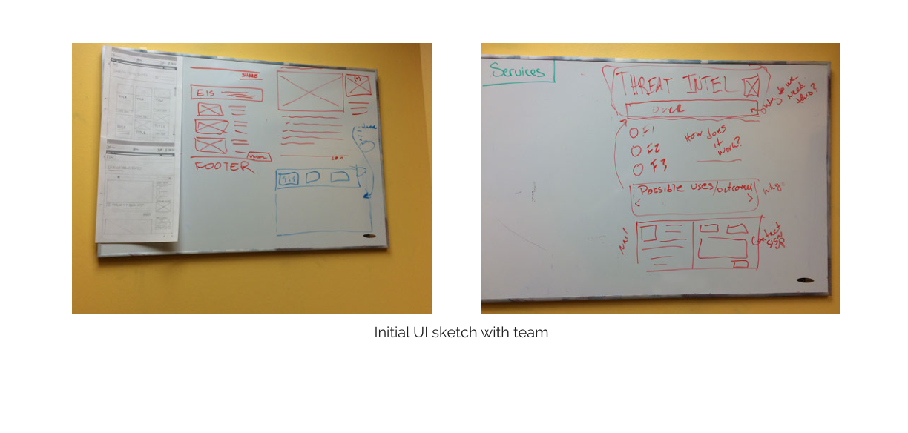
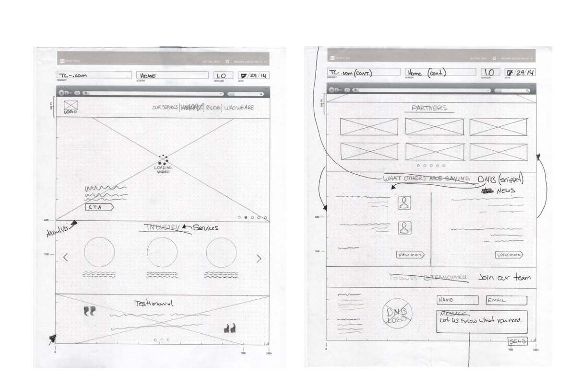
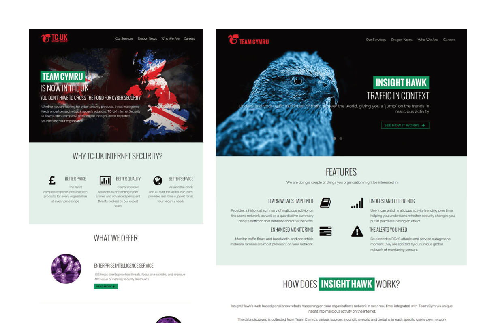
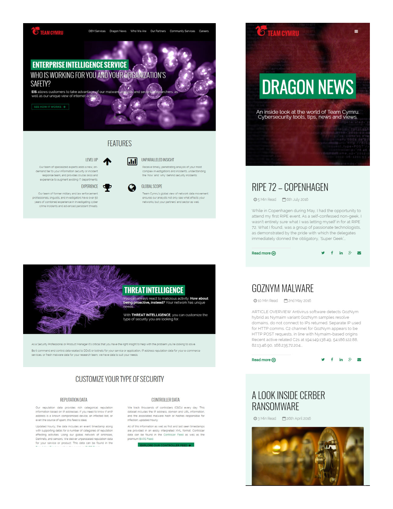

6+
Case study
Team Cymru Website Redesign
The Team Cymru website had grown organically for years into something that served its internal audience better than the people it needed to reach. The intelligence and security work behind it was genuinely serious — the site just wasn't making that clear. I led the redesign from content inventory through final visual execution.
tl;dr
- The legacy site looked like it had been built for an internal audience — the nav was organized by team structure, not by user need.
- A full content inventory preceded any design work. You can't restructure what you haven't counted.
- Card sorting revealed that users navigated by task, not by product line — which was exactly how the existing nav was organized.
- Wireframing started on whiteboards with stakeholders in the room. The rough sketches changed direction faster than anything done in a design tool would have.
- The final design used high-contrast photography on a near-black background — authority communicated through presence rather than explanation.
The Process
A Site That Knew Too Much and Said Too Little
The legacy Team Cymru site had the problem common to sites built over many years without a single owner: it reflected the organization's internal logic more than it served outside visitors. The navigation grouped things by department. The homepage communicated in jargon. The visual design — heavy reds, heraldic imagery, dense text columns — signaled a certain era.
What it didn't communicate clearly was what Team Cymru actually did, who it served, or why any of it mattered to someone arriving without prior context. That wasn't a copywriting problem. It was structural, and the structure had to be addressed before any visual work could hold.


You Can't Restructure What You Haven't Counted
The first step was a complete content inventory — every page catalogued, every section tagged, every piece of content assessed for whether it was still current and still needed. That work isn't glamorous, but it's the only way to understand the actual scope of a problem before proposing a solution to it.
Navigation architecture came next. A card sorting exercise with the team put every major content type on an index card and asked people to group them in a way that felt natural to them. The groupings that emerged were task-oriented, not team-oriented. People wanted to find products, understand services, and contact someone — not navigate by internal department.
That exercise gave the redesign a structural argument that wasn't just aesthetic preference. The new navigation wasn't a creative choice — it was what the card sort showed.
Whiteboards Before Wireframes
The initial sketching happened on whiteboards with stakeholders in the room. That matters more than it sounds. When sketches are rough, it's easy for someone to say "that's not quite right" without feeling like they're rejecting finished work. Bad ideas got discarded in minutes instead of days.
The whiteboard sessions worked through the homepage structure, core product pages, and the blog section before anyone opened a design application. The direction that survived those sessions — prominent hero, clear value proposition leading the page, products surfaced directly — carried forward into formal wireframes without significant change.



Authority Without Complexity
The final visual direction used high-contrast photography — Team Cymru's hawk motif — against a near-black background. That choice wasn't arbitrary. Dark backgrounds with strong imagery create authority quickly, and Team Cymru's work in intelligence and security warranted that register. The old site looked like a government contractor. The new one looked like a company that knew exactly what it was doing.
Each page type got a specific treatment. The homepage led with a clear statement of what Team Cymru did. Product pages like Insight Hawk had their own hero moments. Dragon News used a clean card-based layout. The Enterprise Intelligence and Threat Intelligence pages communicated depth without demanding that visitors work to find what mattered.

Outcome
The redesigned site matched the actual quality of Team Cymru's work. The old site had done the company a quiet disservice — a serious intelligence and security operation presenting itself with a web presence that hadn't kept pace with who they'd become.
The process that produced it — content inventory, card sorting, whiteboard sketching, wireframing, visual execution — wasn't faster than just designing something. But it was more defensible. Every structural decision had a reason, and that meant fewer rework loops when stakeholders had a different instinct.
What the process produced
- A navigation architecture built from user behavior, not internal org charts.
- A visual system that communicated authority without needing to explain itself.
- Page types designed for their specific job — homepage, product, blog, and service pages each with distinct structure.
- A site that felt like a fair representation of the company it was meant to introduce.
Continue Exploring
Contact
If you'd like to talk through the work, I'm happy to share more context.
If you want to discuss the content strategy, the navigation decisions, or how the visual system came together — I'm happy to get into it.
A good conversation is usually a better start than a formal intake form.